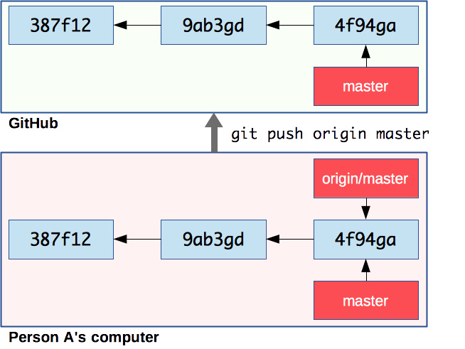
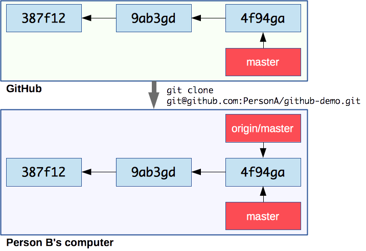
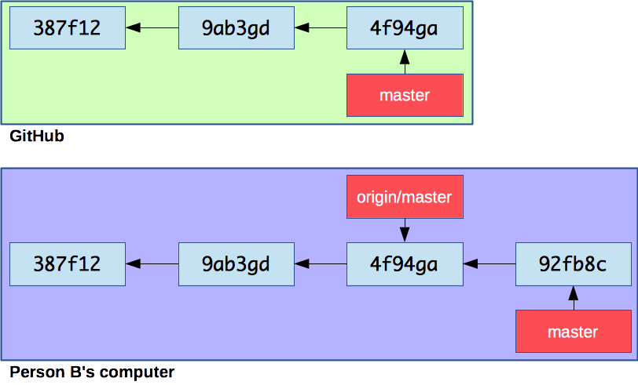
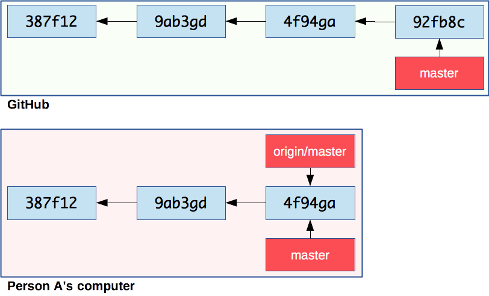
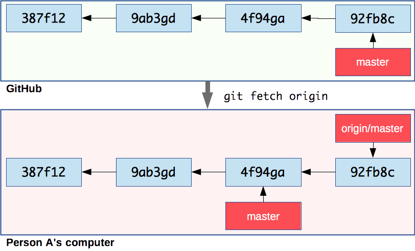
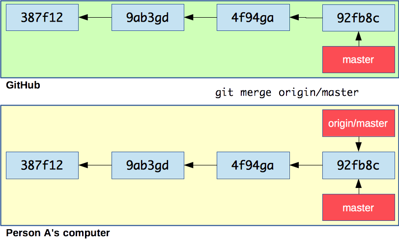
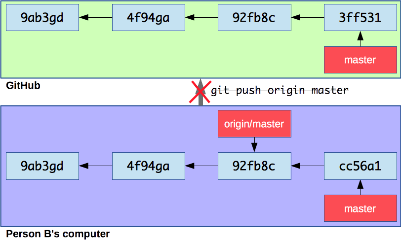
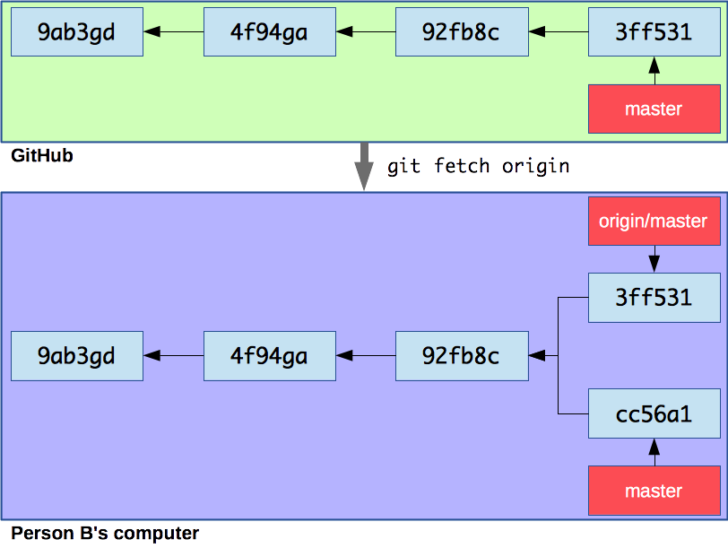
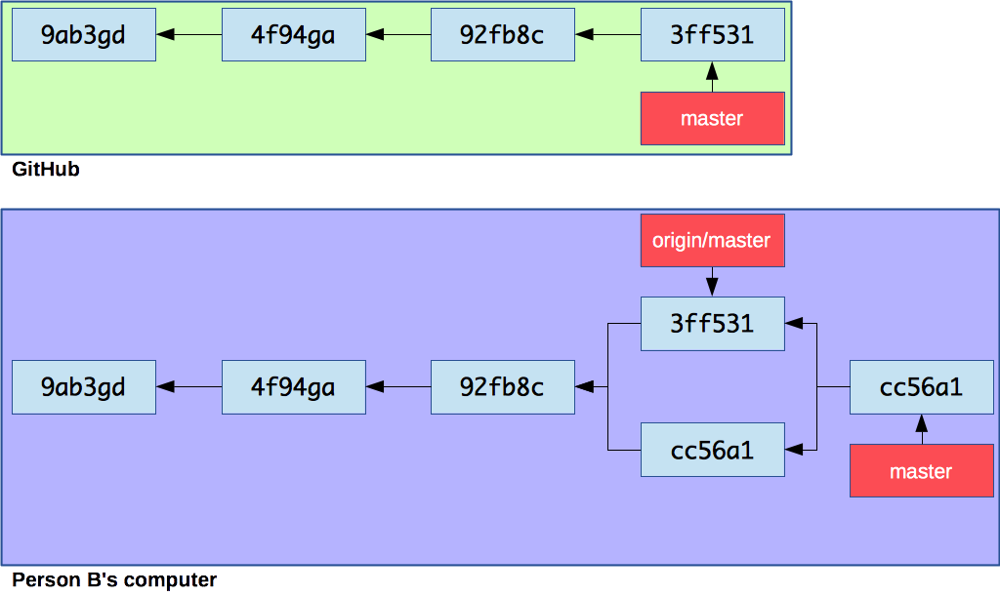
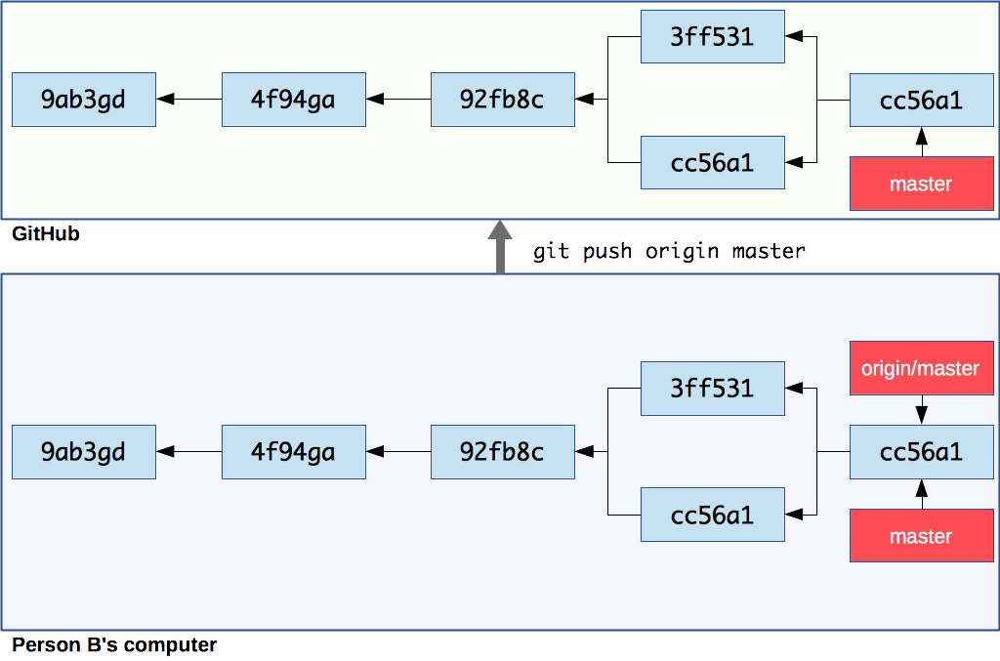

# Collaborating with Git Requirements: * [Git][git] * A [GitHub][github] account * A Unix shell (Git Bash is installed with Git on Windows) --- ## Group work This tutorial is meant to be performed by a group of two. Throughout the rest of the document, the members of the group will be referred to as **Person A** and **Person B**. The tutorial assumes that you have followed the [previous Git tutorial][git-tutorial] and have kept your calculator repository. --- class: center, middle ## Distributed version control system Working with remote repositories --- ### What is a remote? A **remote repository** is a version of your project that is hosted on the Internet or network somewhere. You can have **several of them**. Collaborating with others involves **pushing** and **pulling** data to and from these remote repositories when you need to share work. TODO: multiple remotes diagram (local network, internet, etc) --- ### Centralized workflow There are [many ways][distributed-workflows] to work with Git as a team. Here we will use a simple **centralized workflow**: <p class='center'><img src='images/centralized-workflow.png' width='60%' /></p> In this workflow: * A "shared" central repository hosted on GitHub * Each developer has a repository on their local machine * Each developer will add the shared repository as a **remote** --- ### Working with GitHub > "[GitHub][github] is a web-based Git repository and Internet hosting service. It offers all of the **distributed version control** and **source code management (SCM)** functionality of **Git** as well other features like access control, bug tracking, feature requests, task management, and wikis for every project." <p class='center'><img src='images/github.png' width='70%'></p> --- #### Create a free GitHub account Both group members should register on GitHub: <p class='center'><img src='images/github-account.jpg' width='100%'></p> TODO: add ssh key to account --- class: center, middle ## Sharing changes Clone repositories, push and pull commits --- ### A: create a repository on GitHub **Person A** should create a repository from the GitHub menu: .grid-20[ <img src='images/github-new-repo-menu.png' width='100%' /> ] .grid-80[ <img src='images/github-new-repo.jpg' width='90%' /> ] --- ### A: add B as a collaborator TODO: add B as a collaborator --- ### A: add a remote to your local repository **Person A** should copy the SSH URL of the GitHub repository: Then move into their local repository and add it as a remote: ```bash $> cd /path/to/projects/comem-webdev-git-branching-ex $> git remote add origin git@github.com:PersonA/github-demo.git ``` It's a convention to name the default remote **origin**. You can check what remotes are available with `git remote`: ```bash $> git remote -v origin git@github.com:PersonA/github-demo.git (fetch) origin git@github.com:PersonA/github-demo.git (push) ``` --- ### A: push your commits to the shared repository It's time for **Person A** to put the code in the shared GitHub repository. This is done using the `git push` command: ```bash $> git push origin master Counting objects: 35, done. Delta compression using up to 8 threads. Compressing objects: 100% (33/33), done. Writing objects: 100% (35/35), 4.16 KiB | 0 bytes/s, done. Total 35 (delta 14), reused 11 (delta 2) remote: Resolving deltas: 100% (14/14), done. To github.com:PersonA/github-demo.git * [new branch] master -> master ``` The command `git push [remote] [branch]` tells Git to push the commit pointed to by `[branch]` to the remote named `[remote]`. --- ### A: remote branches .grid-60[  ] .grid-40[ The commit objects and file snapshots have been **pushed** (or uploaded) to the GitHub repository. This includes not only the commit pointed to by master, but also the **entire history** of the repository up to that commit. ] .container[ Note the **origin/master** branch that has appeared in your local repository. This is a **remote-tracking branch**. It tells you where the **master** branch points to on the **origin** remote (the GitHub repository in this case). ] --- ### B: clone the shared repository **Person B** can now get a copy of the shared GitHub repository on their machine. This is done using the `git clone` command: ```bash $> git clone git@github.com:PersonA/github-demo.git Cloning into 'github-demo'... remote: Counting objects: 35, done. remote: Compressing objects: 100% (21/21), done. remote: Total 35 (delta 14), reused 35 (delta 14), pack-reused 0 Receiving objects: 100% (35/35), 4.16 KiB | 0 bytes/s, done. Resolving deltas: 100% (14/14), done. $> cd github-demo ``` The `git clone [url]` command copies the repository to your machine. --- ### B: remote branches .grid-60[  ] .grid-40[ The entire history of the project is **pulled** (or downloaded) from the GitHub repository. Git will also automatically checkout the **master** branch in the working directory so you have something to work from. ] .container[ Again, Git has created a **remote-tracking branch** in Person B's repository, so that you can know what the current state of the remote is. ] --- ### B: make local changes **Person B** thinks that the project's files are too complicated. Let's simplify: ```bash $> mv addition.js add.js $> mv subtraction.js sub.js $> git add --all $> git commit -m "Shorter filenames" ``` --- ### B: check the state of branches .grid-60[  ] .grid-40[ This is now the state of the shared repository and **Person B**'s local repository. There is a new commit in **Person B**'s repository that is not in the shared GitHub repository. ] .container[ Push it to update the shared repository: ```bash $> git push origin master ``` ] --- ### A: check the state of branches .grid-60[  ] .grid-40[ This is now the state from **Person A**'s perspective. Notice that the new commit is in the shared repository (on GitHub) but that the remote-tracking branch origin/master **is not up-to-date** in **Person A**'s repository. ] .container[ Git does not automatically sync repositories. **As far as Person A knows** looking at information from their local repository, the master branch still points to `4f94ga` in the shared repository. ] --- ### A: fetch changes from the shared repository **Person A** should now get the changes from the shared repository: ```bash $> git fetch origin remote: Counting objects: 2, done. remote: Compressing objects: 100% (1/1), done. remote: Total 2 (delta 1), reused 2 (delta 1), pack-reused 0 Unpacking objects: 100% (2/2), done. From github.com:PersonA/github-demo 4f94ga..92fb8c master -> origin/master ``` .grid-60[  ] .grid-40[ The new commit is now here and the remote-tracking branch has been updated. However, the local master branch **has not moved** and the working directory has **not been updated**. ] --- ### A: check the state of branches Now you can use `git merge` like in the previous tutorial to bring the changes of origin/master into master: ```bash $> git merge origin/master Updating 4f94ga..92fb8c Fast-forward addition.js => add.js | 0 1 file changed, 0 insertions(+), 0 deletions(-) rename addition.js => add.js (100%) ``` .grid-60[  ] .grid-40[ As expected, master has been fast-forwarded to the commit pointed to by origin/master and the working directory has been updated. **Person A**'s repository is now up-to-date. ] --- ### Using git pull You can also use `git pull [remote] [branch]` to save time. The following command: ```bash $> git pull origin master ``` Is equivalent to running the two commands we just used: ```bash $> git fetch origin $> git merge origin/master ``` --- class: center, middle ## Managing conflicting commit histories --- ### A: fix the bug **Person A** now notices that the last change breaks the calculator. This is because the files were renamed, but the `<script>` tags in `index.html` were not updated. Fix that bug, then commit and push the change: ```bash (Make the fix...) $> git add index.html $> git commit -m "Fix bad <script> tags" $> git push origin master ``` --- ### B: make other changes **Person B**, not having noticed the bug, proceeds to make 2 changes on `index.html`: * Add an `<h2>` title before each computation * Put the two last `<script>` tags on one line ```html <h2>Addition</h2> <p id="addition">...</p> <h2>Subtraction</h2> <p id="subtraction">...</p> <script src="calculations.js"></script> <script src="addition.js"></script><script src="subtraction.js"></script> ``` Commit and push the changes: ```bash $> git add index.html $> git commit -m "Improve layout" $> git push origin master ``` --- ### Rejected pushes ```bash To github.com:PersonA/github-demo.git ! [rejected] master -> master (fetch first) error: failed to push some refs to 'git@github.com:PersonA/github-demo.git' hint: Updates were rejected because the remote contains work that you do hint: not have locally. This is usually caused by another repository pushing hint: to the same ref. You may want to first integrate the remote changes hint: (e.g., 'git pull ...') before pushing again. hint: See the 'Note about fast-forwards' in 'git push --help' for details. ``` .grid-60[  ] .grid-40[ The push was **rejected** by the remote repository. Why? This is the state of **Person B**'s repository right now. ] --- ### Divergent history .grid-60[  ] .grid-40[ It's for the same reason as in the previous tutorial: **Person A** and **Person B**'s work have diverged from a common ancestor. If **Person B** did a `git fetch` now, this is what their repository would look like. ] --- ### B: pull changes from the shared repository **Person B** wants to fetch and merge the changes made by **Person A**. Let's use the `git pull` command: ```bash $> git pull origin master remote: Counting objects: 3, done. remote: Compressing objects: 100% (2/2), done. remote: Total 3 (delta 1), reused 3 (delta 1), pack-reused 0 Unpacking objects: 100% (3/3), done. From github.com:PersonA/github-demo * branch master -> FETCH_HEAD 92fb8c..3ff531 master -> origin/master Auto-merging index.html CONFLICT (content): Merge conflict in index.html Automatic merge failed; fix conflicts and then commit the result. ``` The fetch succeeded, but the merge failed because of a **conflict** on `index.html`. --- ### B: check the conflict markers **Person B** should take a look at `index.html`: ```txt <<<<<<< HEAD <script src="addition.js"></script><script src="subtraction.js"></script> ======= <script src="add.js"></script> <script src="sub.js"></script> >>>>>>> 3ff5311406e73c7d2cc1691f9535214c2543937f ``` Let's make sure we keep it on one line while still renaming the files, and remove the conflict markers:: ```txt <script src="add.js"></script><script src="sub.js"></script> ``` Mark the conflict as resolved and finish the merge: ```bash $> git add index.html $> git commit -m "Merge origin/master" ``` --- ### B: check the state of branches Now the state of **Person B**'s local repository is consistent with the state of the shared repository: the commit pointed to by **master** is ahead of the commit pointed to by **origin/master**.  --- ### B: push the changes The push will be accepted now: ```bash $> git push origin master ```  [distributed-workflows]: https://git-scm.com/book/en/v2/Distributed-Git-Distributed-Workflows [git]: https://git-scm.com [git-tutorial]: ../git/ [github]: https://github.com